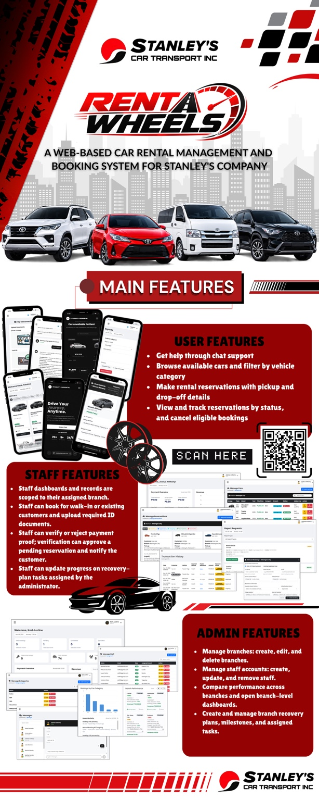
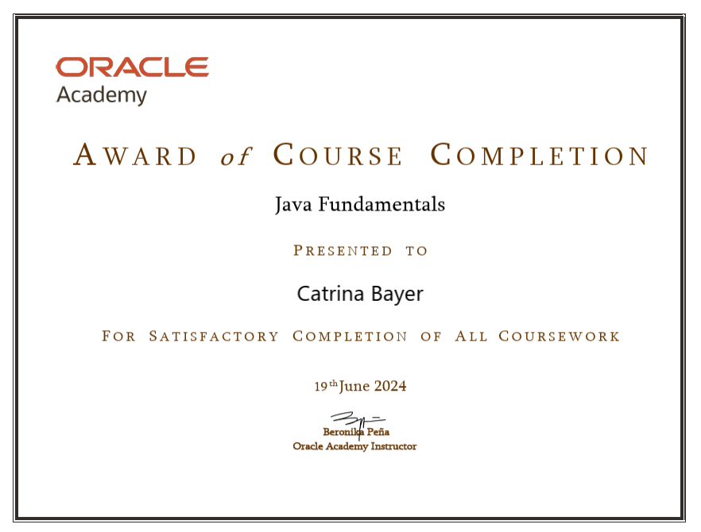
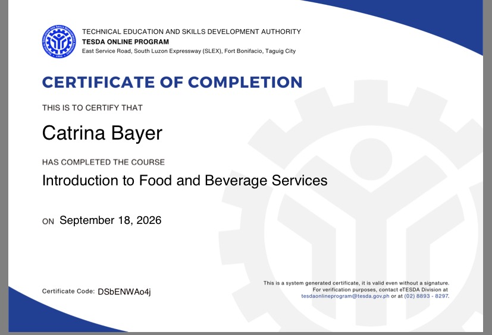
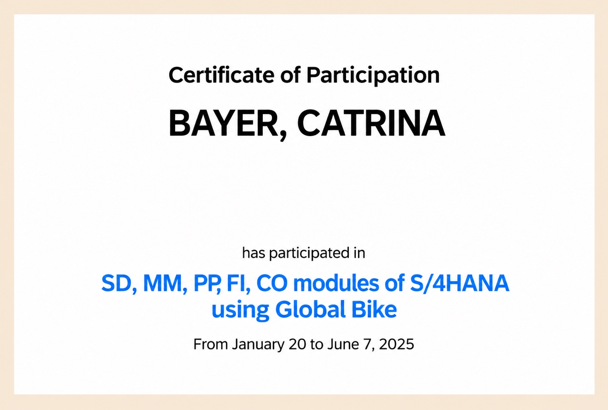

Bachelor of Science in Information Technology
STI College Batangas
HELLO, I'M CATRINA
I'm Catrina Ramirez Bayer, an Information Technology student at STI College Batangas. Welcome to my digital portfolio, where I share my background, skills, achievements, and projects.
Information Technology Student · STI College Batangas
A LITTLE ABOUT ME
I'm a motivated IT student who enjoys discovering how technology works and how it can be used to solve everyday problems.
Throughout my academic journey, I have been developing my knowledge in information technology, computer hardware, programming, and web-based systems. I enjoy learning new concepts, working on school projects, and improving my skills through hands-on experience.
I believe that learning is a continuous process. My goal is to keep growing as a student and future IT professional, build useful digital solutions, and take on opportunities that will help me gain experience.
MY ACADEMIC BACKGROUND
STI College Batangas
Technical Education and Skills Development Authority (TESDA)
WHAT I CAN BRING
♡ Willingness to learn
♡ Responsibility
♡ Adaptability
♡ Team collaboration
♡ Attention to detail
SELECTED WORK
A look at a project developed as part of my learning journey.

A web-based car rental management and booking system for Stanley's Company, designed to make vehicle rental faster, easier, and more convenient.
Technologies: Laravel, PHP, Bootstrap, HTML, CSS, JavaScript, MySQL, Firebase Realtime Database
COURSES & ACHIEVEMENTS
Select a certificate to view the original image.

ORACLE ACADEMY · JUNE 19, 2024Java FundamentalsCertificate of Course Completion ↗
TESDA ONLINE PROGRAM · SEPTEMBER 18, 2026Introduction to Food and Beverage ServicesCertificate of Completion ↗
JANUARY 20 – JUNE 7, 2025SAP S/4HANA Using Global BikeCertificate of Participation ↗LET'S CONNECT
Feel free to contact me through email or connect with me on Facebook.